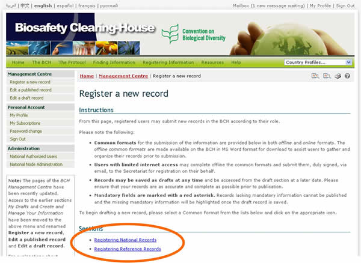
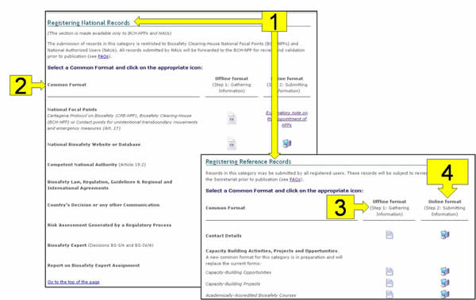

By clicking on the Register a new record link in the left-hand menu, registered users can create records and make them available to the public through the BCH. In the BCH, the stored documents are called records.
The registering a new record process consists of the following steps:
-
Select the type of record from the list of links provided;
-
Complete all of the fields on the electronic registration forms;
-
Click on the Review button to double check the completeness and accuracy of the information entered;
-
Click on the Save changes button; and
-
Click on the Submit for publishing button to make the record public in the BCH.
There are two categories of information in the BCH: National Records and Reference Records.

The types of record that registered users may submit depend on their role as follows:
-
BCH national focal points (BCH-NFPs) may register all types of BCH records with the exception of National Focal Point records. When submitted by BCH-NFPs, National Records are directly published while Reference Records are subject to validation by the Secretariat prior to publication in the BCH.
-
National Authorized Users (NAUs) may also register all types of BCH records with the exception of National Focal Point records. When submitted by NAU, National Records are subject to validation by BCH-NFP and Reference Records are subject to validation by the Secretariat prior to publication in the BCH.
-
General registered users may register all types of Reference Records, subject to validation by the Secretariat prior to publication in the BCH.

The Register a new record page provides access to the following:
-
Categories of documents (national and reference records);
-
Names of the Common Formats;
-
Link to offline Common Formats;
-
Link to online Common Formats.